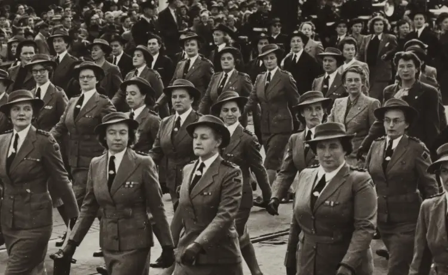

La puissance féminine
Les femmes se combattent pour leur droit et leur place dans la société depuis déjà 1791 mais les deux guerres mondiales ont été décisives pour la place des femmes. Elles ont permis de montrer au monde que les femmes sont aussi talentueuses que les hommes dans les usines.
Les retombés d’après-guerre ont permis de voir au de là du travail en redéfinissant les préjugés de la femme et en la protégeant des violences qu’elles peuvent subir .
Un mouvement mondiale
De 1939 à 1945, les femmes ne se seraient jamais attendues à être autant impliqué dans la société. Que ce sois en Angleterre, en France, en Australie et même au Canada toutes les femmes se mobilisent dans divers secteurs.
L’Australie par exemple, possède un effectif de soldats masculins trop faibles, des femmes se doiventdonc de partir se battre pour leur pays.Elles n’étaient pas forcées, la base de leurs volontariats prouve pleinement qu’homme ou femme, chacun à sa place dans tous les domaines.
D’autres pays tels que l’Italie, le Canada, la Finlande et bien d’autres vont mobiliser des femmes volontaires dans de multiples domaines variés qui normalement étaient à la charge des hommes.
Cette égalité au niveau de l’emploi était déjà présente lors de la Première Guerre mondiale mais elle c’est amplifié lors de la seconde. Les femmes ont commencé bien avant à travailler dans les usines et principalement dans la couture, dans l’artisanat de fruits et en tant que professeurs. Les remplacements des hommes dans les usines par les femmes ont marqué un réel pas vers l’égalité homme-femme.
L’espoir féminin
Les femmes françaises quant à elles ne vont pas se battre au front. Elles vont simplement fournir de l’aide dans le domaine de la nourriture et des soins. Tout s’explique par le fait qu’elles sont à cette époque considérée comme emprisonnée et impuissante. Elles ne possèdent ni droit de vote ni droit de travailler et de posséder un compte avec de l’argent si l’époux ne donne pas son accord.
Cet aspect d’emprisonnement va donc pousser plusieurs femmes à se lancer dans un mouvement de résistance. Les femmes se mobilisant vont venir des quatre coins de la France avec des âges très variés. Cela va des adolescentes comme Germaine Tillion jusqu’à Lucie Aubrac une femme mariée avec des enfants. Être une résistante n’est pas une chose sans risque, c’est illégal et les femmes quant à elles veulent simplement montrer qu’elles doivent être libres tout comme les hommes
Le féminisme d’après guerre
L’égalité entre homme-femme au niveau des emplois n’était que temporaire lors de la guerre. Les femmes remplaçaient juste le rôle des hommes car il n’y avait pas d’autre choix. C’est pourquoi après 1945 la vie reprend son cours et les inégalités se réinstallent. Jusqu’au jour ou la deuxième vague de féminisme surgis en 1960.
Celle-ci va s’appuyer sur la notion de sexualité de la femme et non sur les droits que celle-ci possède, car il faut tout d’abord redéfinir les préjugés présents sur une femme. Un grand nombre de femmes se joignent au mouvement en souhaitant que l’on ait plus de reconnaissance face aux femmes qui consacre du temps aux tâches ménagères. C’est ici la base de la sexualité car depuis des années les êtres humains associent femme avec ménage et cuisine.
La sexualité va inclure les viols et les violences conjugales subis par des millions de femmes, ce qui va faire surgir beaucoup de militante et des manifestations auront lieu, encore aujourd’hui on se bat pour cette cause et on a trouvé plusieurs moyens afin de la préméditée (tel que des numéros ou des démarches à faire en cas de détresse, ce qui n’existait pas il y a 40 ans).
L’histoire du féminisme en frise

Prochain article
Vous souhaitez en voir plus ?
N’hésitez pas à regarder les autres articles proposé par d’autres éudiants.